Prediksi Kadar NO₂ di Daerah Sumenep Madura#
Latar Belakang#
Peningkatan aktivitas industri, transportasi, serta pertumbuhan populasi yang pesat telah menyebabkan peningkatan signifikan terhadap tingkat pencemaran udara di berbagai wilayah. Salah satu polutan udara utama yang menjadi perhatian adalah Nitrogen Dioksida (NO₂), yaitu gas beracun yang dihasilkan terutama dari proses pembakaran bahan bakar fosil seperti kendaraan bermotor, pembangkit listrik, dan kegiatan industri.
NO₂ memiliki dampak serius terhadap kesehatan manusia, seperti gangguan pernapasan, iritasi paru-paru, serta memperburuk penyakit asma dan bronkitis. Selain itu, NO₂ juga berkontribusi terhadap pembentukan hujan asam dan penurunan kualitas lingkungan secara keseluruhan.
Dataset yang Digunakan#
Atribut |
Keterangan |
|---|---|
Sumber |
Copernicus Dataspace - Sentinel-5P L2 |
Rentang Waktu |
2024-06-01 s.d. 2026-06-01 (2 tahun) |
Wilayah |
Sumenep, Madura (113.64°E–114.00°E, 6.85°S–7.15°S) |
Variabel Target |
Kadar NO₂ harian (mol/m²) |
Format File Awal |
|
Format Setelah Olah |
|
Struktur data NO₂ mentah dari file .nc berbentuk array 3 dimensi per timestep:
no2[timestep] → shape: [9 baris × 8 kolom]
Setiap sel grid berisi nilai kadar NO₂ untuk area tersebut, termasuk kemungkinan missing value yang ditandai dengan --.
Konsep Dasar KNN Regression#
KNN Regression adalah metode machine learning berbasis instance yang memprediksi nilai suatu titik data berdasarkan rata-rata dari \(k\) tetangga terdekatnya dalam ruang fitur. Berbeda dengan model parametrik seperti regresi linier, KNN tidak membangun model eksplisit - ia langsung menggunakan data pelatihan saat prediksi.
Cara Kerja KNN Regression#
KNN Regression bekerja dengan mencari sejumlah k data pelatihan yang paling mirip (terdekat) dengan data baru yang ingin diprediksi, lalu mengambil rata-rata nilai target dari k tetangga tersebut sebagai hasil prediksi. Semakin kecil nilai k, model akan lebih sensitif terhadap noise; semakin besar k, prediksi menjadi lebih halus namun bisa kehilangan detail lokal.
Pada proyek ini digunakan k = 5.
Jarak Euclidean#
Untuk mengukur kemiripan antar data, KNN menggunakan jarak Euclidean - yaitu jarak lurus antar dua titik dalam ruang fitur. Semakin kecil jaraknya, semakin mirip kedua data tersebut.
⚠️ Karena KNN sensitif terhadap skala fitur, normalisasi data sebelum modeling adalah langkah yang wajib dilakukan.
Transformasi Data Time Series ke Supervised Learning#
Data Time Series bersifat unsupervised (hanya memiliki satu kolom nilai). Agar dapat digunakan oleh model machine learning, data perlu diubah ke format supervised dengan membuat fitur dari lag - yaitu nilai kadar NO₂ dari hari-hari sebelumnya - sebagai input, dan nilai hari ini sebagai label/target.
Alur Kerja (Pipeline)#
Pengumpulan Data (NetCDF)
↓
Preprocessing
├── Interpolasi Missing Value (grid)
├── Rata-rata Spasial → Time Series Harian
├── Simpan ke CSV
├── Cek & Isi Missing Value Harian
└── Deteksi & Hapus Outlier (IQR)
↓
Persiapan Modeling
├── Normalisasi (Min-Max Scaler)
├── Uji Korelasi Lag
└── Ubah ke Format Supervised
↓
Modeling KNN Regression
├── Lag-4, Lag-10, Lag-30
└── Evaluasi (RMSE, R², MAPE)
↓
Visualisasi Hasil
Pengumpulan Data#
Langkah 1 - Instalasi dan Koneksi ke Copernicus Dataspace#
Data diambil menggunakan library openeo di JupyterLab yang disediakan Copernicus.
Daftarkan akun terlebih dahulu di https://dataspace.copernicus.eu/.
Instalasi library:
pip install openeo
Koneksi dan autentikasi:
import openeo
connection = openeo.connect("openeo.dataspace.copernicus.eu").authenticate_oidc()
Autentikasi dilakukan via device code flow - program akan menampilkan link autentikasi yang perlu dikunjungi menggunakan browser.
Output:
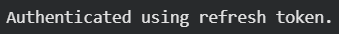
Langkah 2 - Definisi Area (AOI)#
Koordinat wilayah Sumenep diperoleh melalui geojson.io. Pilih area dengan memberi kotak pada peta, lalu salin koordinat dari panel JSON di sebelah kanan.
Langkah 3 - Pengambilan Data Sentinel-5P#
aoi = {
"type": "Polygon",
"coordinates": [
[
[113.6467218, -6.8612795],
[114.0030674, -6.8505806],
[114.0076858, -7.1507964],
[113.6467209, -7.1523237],
[113.6467218, -6.8612795],
]
]
}
s5post = connection.load_collection(
"SENTINEL_5P_L2",
temporal_extent=["2024-06-01", "2026-06-01"],
spatial_extent={
"west": 113.6467209,
"south": -7.1523237,
"east": 114.0076858,
"north": -6.8505806
},
bands=["NO2"],
)
# Agregasi per hari (hindari duplikasi data dalam satu hari)
s5p_no2_daily = s5post.aggregate_temporal_period(reducer="mean", period="day")
# Agregasi spasial → satu nilai rata-rata per hari
s5p_no2_aoi = s5p_no2_daily.aggregate_spatial(reducer="mean", geometries=aoi)
# Jalankan batch job
job = s5post.execute_batch(title="NO2 in Sumenep", outputfile="dataset/forecasting/NO2Sumenep.nc")
Output:
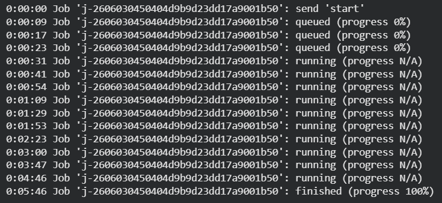
Status pengambilan data dapat dipantau di OpenEO Editor.
Preprocessing Data#
Step 1 - Baca File NetCDF dan Ekstrak NO₂#
import netCDF4
file_path = "dataset/forecasting/NO2Sumenep.nc"
ds = netCDF4.Dataset(file_path)
# Lihat variabel yang tersedia
print(ds.variables.keys())
# dict_keys(['t', 'x', 'y', 'crs', 'NO2'])
no2 = ds.variables["NO2"][:] # MaskedArray shape (725, 9, 8)
time = ds.variables["t"][:]
time_units = ds.variables["t"].units
dates = netCDF4.num2date(time, units=time_units)
Data NO₂ yang didapat berbentuk MaskedArray dengan dimensi (725, 9, 8), di mana 725 adalah jumlah timestep dan setiap timestep memiliki grid 9×8. Nilai -- menandakan missing value.
Output:
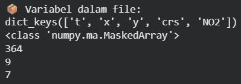
Step 2 - Atasi Missing Value Grid dengan Interpolasi Linear#
Missing value tersebar di dalam grid, sehingga interpolasi dilakukan per-sel grid secara individual. Setiap sel pada posisi (i, j) diisi nilainya berdasarkan nilai sel yang sama di timestep sebelum dan sesudahnya.
import numpy as np
import pandas as pd
no2_filled = np.zeros_like(no2)
no2_filled = no2_filled.filled(0)
for i in range(no2.shape[1]): # 9 baris
for j in range(no2.shape[2]): # 8 kolom
series = pd.Series(no2[:, i, j])
no2_filled[:, i, j] = series.interpolate(
method='linear', limit_direction='both'
).to_numpy()
Step 3 - Rata-ratakan Spasial dan Ubah Format Datetime#
Setelah missing value terisi, setiap timestep dirata-ratakan dari seluruh 72 sel grid (9×8) menjadi satu nilai tunggal menggunakan np.mean(). Sekaligus format datetime diubah dari 2024-06-01 00:00:00 menjadi 2024-06-01 karena kita hanya membutuhkan data harian.
new_dates = []
new_no2 = []
for i in range(len(dates)):
new_date = dates[i].strftime('%Y-%m-%d') # Hilangkan jam/menit/detik
new_dates.append(new_date)
new_no2.append(np.mean(no2_filled[i]))
Step 4 - Simpan ke CSV#
df = pd.DataFrame({"date": new_dates, "NO2": new_no2})
df.to_csv("dataset/forecasting/NO2_Sumenep_timeseries.csv", index=False)
Output:
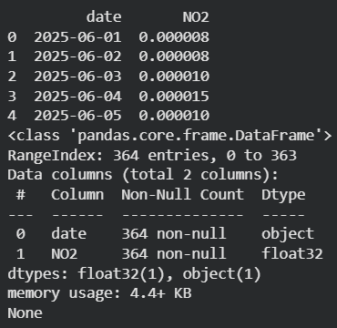
Step 5 - Cek & Isi Missing Value Harian#
import pandas as pd
df = pd.read_csv("dataset/forecasting/NO2_Sumenep_timeseries.csv")
df['date'] = pd.to_datetime(df['date'])
full_range = pd.date_range(start="2025-06-01", end="2026-05-31", freq='D')
missing_dates = full_range.difference(df['date'])
print(f"Jumlah hari missing: {len(missing_dates)}")
Output:
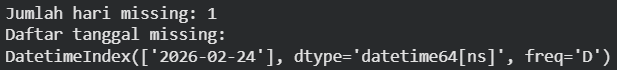
Jika ditemukan tanggal yang hilang, isi menggunakan interpolasi linear:
df = df.set_index('date').reindex(full_range)
df.index.name = 'date'
df['NO2'] = df['NO2'].interpolate(method='time')
df['NO2'] = df['NO2'].fillna(method='bfill').fillna(method='ffill')
df.to_csv("dataset/forecasting/no2_sumenep_interpolated.csv")
Output:
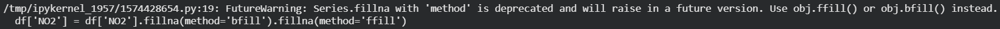
Step 6 - Deteksi Outlier dengan Metode IQR#
Outlier terdeteksi menggunakan Interquartile Range (IQR). Metode ini menentukan batas bawah dan batas atas berdasarkan sebaran tengah data (Q1 dan Q3). Data yang berada di luar batas tersebut dianggap sebagai outlier. Perhitungannya ditangani langsung oleh kode berikut:
import pandas as pd
import numpy as np
import matplotlib.pyplot as plt
df = pd.read_csv("dataset/forecasting/no2_sumenep_interpolated.csv")
df['date'] = pd.to_datetime(df['date'])
Q1 = df['NO2'].quantile(0.25)
Q3 = df['NO2'].quantile(0.75)
IQR = Q3 - Q1
lower_bound = Q1 - 1.5 * IQR
upper_bound = Q3 + 1.5 * IQR
outliers_iqr = df[(df['NO2'] < lower_bound) | (df['NO2'] > upper_bound)]
print("Jumlah Outlier (IQR):", len(outliers_iqr))
Outlier yang terdeteksi dihapus dan posisinya diisi ulang menggunakan interpolasi linear agar kontinuitas data time series tetap terjaga:
df['NO2_cleaned'] = df['NO2'].mask(
(df['NO2'] < lower_bound) | (df['NO2'] > upper_bound)
)
df['NO2_filled'] = df['NO2_cleaned'].interpolate(method='linear')
df['NO2_filled'] = df['NO2_filled'].bfill().ffill()
Output:
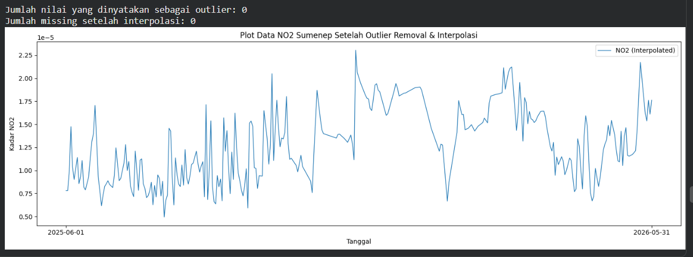
Visualisasi deteksi outlier:
plt.figure(figsize=(15, 5))
plt.plot(df['date'], df['NO2'], label="NO2", linewidth=1)
plt.scatter(outliers_iqr['date'], outliers_iqr['NO2'],
color='red', marker='o', label="Outliers")
plt.axhline(upper_bound, color='orange', linestyle='dashed', label="Upper Bound (IQR)")
plt.axhline(lower_bound, color='blue', linestyle='dashed', label="Lower Bound (IQR)")
plt.title("Deteksi Outlier Data NO2 Sumenep (Metode IQR)")
plt.xlabel("Tanggal")
plt.ylabel("Kadar NO2")
plt.legend()
plt.tight_layout()
plt.show()
Output:
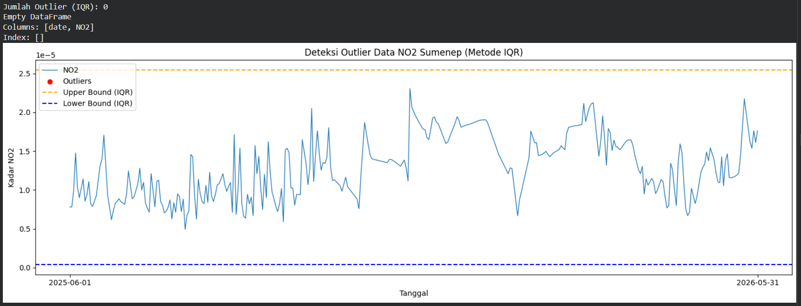
Persiapan Modeling#
Normalisasi Data (Min-Max Scaler)#
KNN sangat sensitif terhadap skala karena menggunakan jarak Euclidean. Normalisasi Min-Max mengubah semua nilai ke rentang 0–1 sehingga tidak ada fitur yang mendominasi perhitungan jarak. Proses ini ditangani oleh MinMaxScaler dari sklearn:
from sklearn.preprocessing import MinMaxScaler
scaler = MinMaxScaler()
df['NO2_scaled'] = scaler.fit_transform(df[['NO2_filled']])
Uji Korelasi Lag#
Sebelum menentukan jumlah lag, dilakukan uji korelasi antara nilai kadar NO₂ hari ini dengan nilai dari 30 hari sebelumnya. Ini untuk mengetahui seberapa besar pengaruh hari-hari sebelumnya terhadap nilai hari ini:
import pandas as pd
def create_supervised(data, n_lag=4):
df_supervised = pd.DataFrame()
for i in range(n_lag, 0, -1):
df_supervised[f'NO2(t-{i})'] = data.shift(i)
df_supervised['NO2(t)'] = data
df_supervised.dropna(inplace=True)
return df_supervised
supervised_df30 = create_supervised(df['NO2_scaled'], n_lag=30)
lag_cols = supervised_df30.drop(columns="NO2(t)").columns
correlations = supervised_df30[lag_cols].corrwith(supervised_df30['NO2(t)'])
print(correlations)
Output:
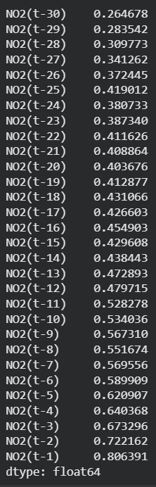
Ubah Data ke Format Supervised#
Tiga variasi supervised dataset dibentuk untuk eksperimen perbandingan:
supervised_df4 = create_supervised(df['NO2_scaled'], n_lag=4)
supervised_df10 = create_supervised(df['NO2_scaled'], n_lag=10)
supervised_df30 = create_supervised(df['NO2_scaled'], n_lag=30)
print(supervised_df4.shape)
print(supervised_df10.shape)
print(supervised_df30.shape)
Output:
Supervised 4:#
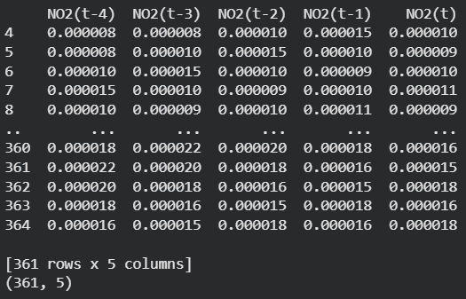
Supervised 10:#
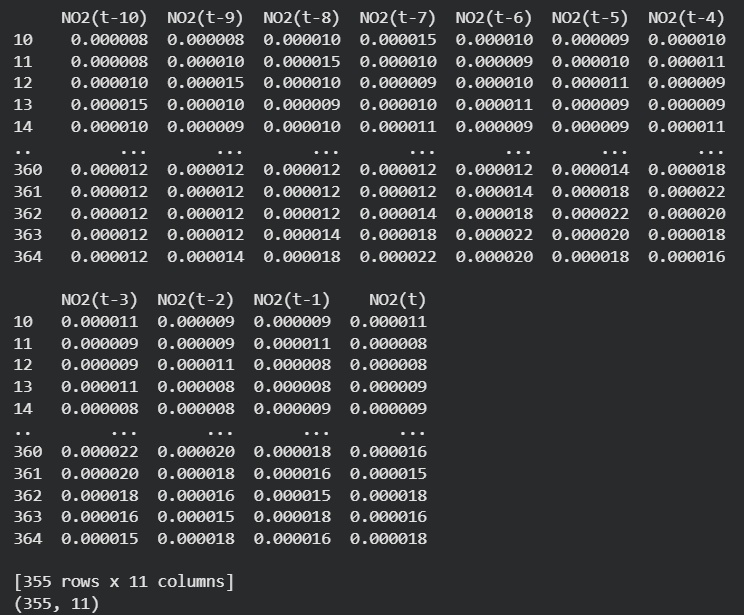
Supervised 30:#
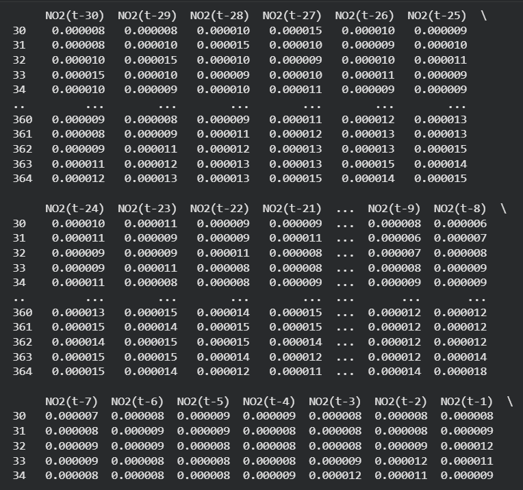
Implementasi KNN Regression#
Fungsi Evaluasi dan Training#
from sklearn.neighbors import KNeighborsRegressor
from sklearn.model_selection import train_test_split
from sklearn.metrics import mean_squared_error, r2_score
import numpy as np
def MAPE(y_true, y_pred):
y_true, y_pred = np.array(y_true), np.array(y_pred)
nonzero = y_true != 0
return np.mean(np.abs((y_true[nonzero] - y_pred[nonzero]) / y_true[nonzero])) * 100
def train_knn(df_supervised, model_name=""):
X = df_supervised.drop(columns=['NO2(t)']).values
y = df_supervised['NO2(t)'].values
# Split 80% train / 20% test (tanpa shuffle untuk menjaga urutan waktu)
X_train, X_test, y_train, y_test = train_test_split(
X, y, test_size=0.2, shuffle=False
)
knn = KNeighborsRegressor(n_neighbors=5)
knn.fit(X_train, y_train)
y_pred = knn.predict(X_test)
mse = mean_squared_error(y_test, y_pred)
rmse = np.sqrt(mse)
r2 = r2_score(y_test, y_pred)
mape = MAPE(y_test, y_pred)
print(f"=== {model_name} ===")
print(f"Train: {len(X_train)} | Test: {len(X_test)}")
print(f"RMSE : {rmse:.6f}")
print(f"R² : {r2:.4f}")
print(f"MAPE : {mape:.4f}%")
return knn, y_test, y_pred
Training Tiga Model#
knn_4, y_test_4, y_pred_4 = train_knn(supervised_df4, "KNN - 4 Hari Sebelumnya")
knn_10, y_test_10, y_pred_10 = train_knn(supervised_df10, "KNN - 10 Hari Sebelumnya")
knn_30, y_test_30, y_pred_30 = train_knn(supervised_df30, "KNN - 30 Hari Sebelumnya")
Output:
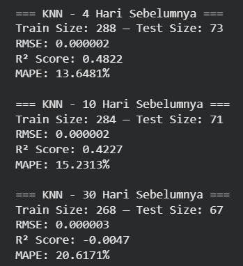
Visualisasi Hasil#
import matplotlib.pyplot as plt
import numpy as np
fig, axes = plt.subplots(3, 1, figsize=(14, 12))
configs = [
(y_test_4, y_pred_4, "KNN - 4 Hari Sebelumnya"),
(y_test_10, y_pred_10, "KNN - 10 Hari Sebelumnya"),
(y_test_30, y_pred_30, "KNN - 30 Hari Sebelumnya"),
]
for ax, (y_test, y_pred, title) in zip(axes, configs):
ax.plot(np.arange(len(y_test)), y_test, label="Actual", linewidth=1.5)
ax.plot(np.arange(len(y_pred)), y_pred, label="Predicted", linewidth=1.5, linestyle='--')
ax.set_title(title, fontsize=11)
ax.set_xlabel("Sample Index")
ax.set_ylabel("NO₂ (scaled)")
ax.legend()
ax.grid(True, linestyle='--', alpha=0.4)
plt.tight_layout()
plt.savefig("plot_knn_no2_sumenep.png", dpi=150, bbox_inches='tight')
plt.show()
Output:
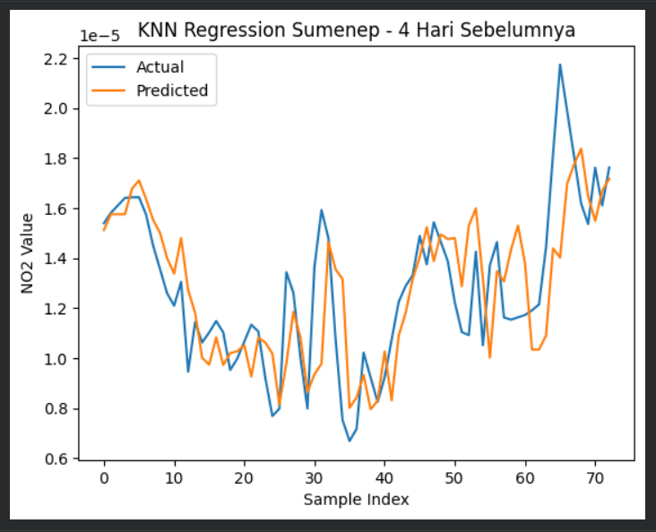
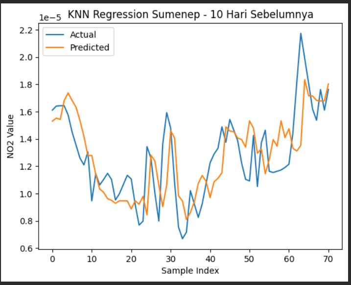
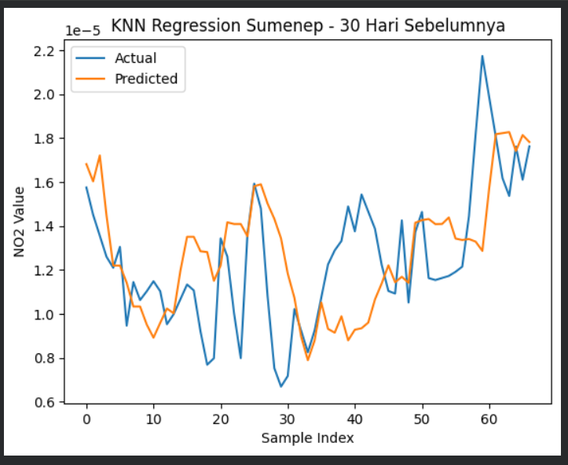